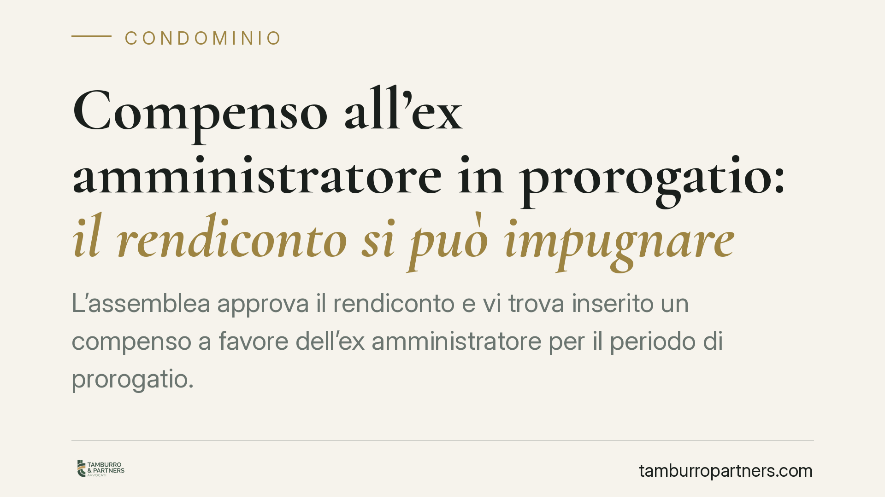

Compenso all'ex amministratore in prorogatio: il rendiconto si può impugnare
L'assemblea approva il rendiconto e vi trova inserito un compenso a favore dell'ex amministratore per il periodo di prorogatio. Quella posta non è dovuta e altera il contenuto economico del bilancio: la delibera è annullabile ex art. 1137 cod. civ. Chi vuole contestarla ha un termine stringente di trenta giorni. Vediamo cosa prevede la disciplina e come muoversi.

Il caso
Alla scadenza dell'incarico l'amministratore non cessa di colpo le proprie funzioni. L'art. 1129, ultimo comma, cod. civ. prevede la cosiddetta *prorogatio*: l'amministratore uscente resta in carica per il disbrigo degli affari urgenti, fino alla nomina del successore. Si tratta di un regime di continuità, non di una proroga del mandato retribuito.
Il problema nasce quando l'assemblea approva un rendiconto che include, tra le uscite, un compenso a favore dell'ex amministratore proprio per il periodo di prorogatio. La domanda è semplice: quella somma è dovuta? E se non lo è, la delibera che la approva può essere contestata?
Inquadramento normativo
La *prorogatio* ha natura di istituto a tutela del condominio, non dell'amministratore. Serve a evitare vuoti di gestione nel passaggio di consegne. Durante questa fase l'amministratore uscente svolge solo attività conservative e urgenti: non prosegue un rapporto contrattuale pieno e, in assenza di una specifica pattuizione approvata dall'assemblea, non matura un autonomo diritto a un ulteriore compenso.
Il compenso dell'amministratore, del resto, deve essere determinato al momento della nomina a pena di nullità (art. 1129, comma 14, cod. civ.). Non può essere attribuito a posteriori attraverso l'inserimento di una voce nel rendiconto, che ha la funzione di dare conto della gestione (art. 1130-bis cod. civ.), non di creare nuove obbligazioni a carico dei condomini.
Se l'assemblea approva comunque quella posta, la delibera non è nulla ma annullabile: non manca di un elemento essenziale, ma viola la legge nella formazione del suo contenuto economico. Scatta quindi l'art. 1137 cod. civ., che consente l'impugnazione davanti all'autorità giudiziaria entro trenta giorni. Il termine decorre dalla deliberazione per i condomini presenti dissenzienti o astenuti, e dalla comunicazione del verbale per gli assenti.
Implicazioni pratiche
La distinzione tra nullità e annullabilità non è un dettaglio teorico. La delibera nulla può essere contestata senza limiti di tempo; quella annullabile, se non impugnata entro trenta giorni, si consolida e diventa pienamente efficace.
Tradotto: il condomino che si accorga del compenso indebito ha una finestra molto breve per reagire. Lasciar decorrere il termine significa, di fatto, accettare l'esborso, anche quando quel compenso non era dovuto.
Va poi tenuto presente il requisito della legittimazione: può impugnare solo il condomino dissenziente, astenuto o assente. Chi ha votato a favore della delibera non può poi contestarla. Per questo è decisivo verbalizzare con precisione il proprio voto contrario in assemblea.
L'impugnazione, inoltre, deve essere preceduta dal tentativo di mediazione obbligatoria in materia condominiale: un passaggio che incide sui tempi e va organizzato subito, proprio per non bruciare il termine dei trenta giorni.
Cosa fare in concreto
- Verificate il rendiconto voce per voce prima di votare: individuate eventuali compensi riferiti al periodo di prorogatio e chiedete che il verbale ne dia conto espressamente.
- Fate verbalizzare il vostro dissenso in modo chiaro. Senza voto contrario, astensione o assenza non c'è legittimazione a impugnare.
- Annotate la data della delibera o della comunicazione del verbale: da lì decorre il termine perentorio di trenta giorni, che non ammette proroghe.
- Attivate subito la mediazione obbligatoria: è condizione di procedibilità dell'impugnazione e richiede tempi tecnici da calcolare per tempo.
- Consigliamo di raccogliere la documentazione sulla nomina dell'amministratore e sulla determinazione originaria del compenso: è l'elemento che dimostra se la somma fosse o meno dovuta.
Il punto fermo è la tempestività. La contestazione di una posta indebita nel rendiconto è pienamente percorribile, ma richiede di muoversi nei termini e con il corretto presupposto di legittimazione. Agire dopo la scadenza, salvo i casi di nullità, non consente di recuperare quanto deliberato.
Contributo informativo a cura di Tamburro & Partners - Avv. Giuseppe Tamburro. Non costituisce parere legale.
Ogni condominio ha una storia a sé.
Se gestisci un'amministrazione e vuoi un confronto su una specifica questione condominiale, scrivi allo studio. Ti rispondiamo entro un giorno lavorativo.